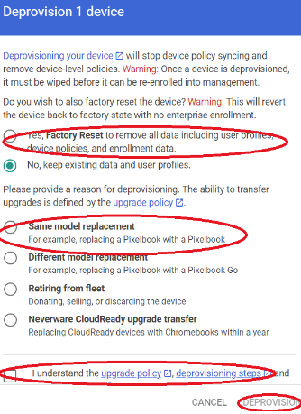

Server Status Links for Services Used by Staff
These are links that show the server status of the most commonly used services by saff/teachers. Statuses are usually fairly accurate at showing known/reported issues, and are updated pretty frequently.
| Service | URL (Link) | Description |
|---|---|---|
| Clever | https://status.clever.com/ | SSO, Roster, Illuminate, some PowerSchool systems |
| Lexia | https://status.lexialearning.com/ | Lexia Core 5 reading |
| PowerScool | https://status.powerschool.com/ | Enrollment, SIS |
| JAMF | https://status.jamf.com/ | JAMF dashboard for iPads and APIs used by iPads |
| Google Workspace Suite | https://www.google.com/appsstatus/dashboard/ | All Google suite products |
| AWS | https://health.aws.amazon.com/health/status | Amazon Web Service runs a lot of our databases and APIs |
| GoGuardian | https://status.goguardian.com/ | GoGuardian Admin dashboard, content filtering |
| Frontline Education | https://www.saashub.com/frontline-education-status/ | Applitrack; time and attendance |
Important IT Links
Spreadhseet of important links for IT:
Important IT Links
^ Back to TopDeprovisioning Chromebooks
Follow these steps to deprovision Chromebooks using the Google Admin console.
-
Log in to Google Admin Console using SUSD credentials. Once logged in, click on Devices:
-
Click on the Chrome Devices option:
-
Change the Status from Provisioned to All, and then enter the device's serial number to find it in the console:
-
Click on Deprovision from the options menu on the left panel of the console:
-
Click on Yes, Factory Reset, then click on the radio button next to Same Model Replacement, and then check the checkbox to acknowledge the upgrade policy. Click the Deprovision button:

- The Chromebook will restart, powerwash, and then will be ready for enterprise enrollment again.
Make a Windows User an Admin on their Laptop
Using CMD to set current user as Admin on their district-issue laptop does not work on the G7 laptops. Here is a working method:
- Log in to the laptop using your Admin account
- Press the Windows Logo key & R key at the same time to open the Run dialog.
- Enter netplwiz in the text field and press Enter or click OK.
- A window will open with settings for user accounts. Click on Add...
- A dialog will appear to add a domain account. Click on Browse...
- In the Object Names dialog, type the user's SUSD username (first part of their email, without the susd12.org).
- Click on Check Names and make sure that the user's full name and SUSD email address shows up.
- Click on OK; once the dialog closes click on Next.
- Click the radio button that says Administrator, then click Next
- Click Finish and then click Apply, and OK.
- Restart the laptop, and have the user log in to their account. The user will now have full admin control over their laptop.
** NOTE: If a UAC dialog pops up asking the user to provide admin credentials, they can enter their SUSD username and password, and they will be granted admin priviledges.
^ Back to TopSet a Windows User Up with Secure Print
- Once the printer is added to the user's computer, open up Control Panel and navigate to Devices and Printers.
- Locate the printer that the user wants to enable Secure Print on and right-click and click Printing Preferences.
-
A dialog box will appear. In the Basic Settings tab, click on the dropdown for Output Method:
-
Click on the Secured Print option:
-
An alert will pop up asking if you want to set the user's PIN now. Click on No to require the user to create a new PIN each time they wish to print a document. This will help combat users forgetting their Secure Print PIN:
- The user will now be set up for Secure Print on that printer, and will be prompted to provide a PIN each time they print a document to that printer.
Add LAMP Apps to SPED iPads in JAMF
- Log in to JAMF Dashboard.
- Go to Devices and look for the iPad by serial number.
- Move the iPad to the main Sunnyside OU (DO NOT move device owner!)
- Add device group SPED no apps
- Add device groupd SPED Device Group
- LAMP will install automatically.
- If TouchChat is needed, this will need to be manually installed from Managed Apps.
- At the top of the device profile in JAMF, click on Permanently delete deffered items.
Factory Reset Cisco Phones
Follow these steps to reset the Cisco CP-3950 Classroom phones to factory defaults:
- Unplug the Network cable from the back of the phone.
- Hold down the # key on the phone.
- Wait 3 seconds, then plug the Network cable back into the phone, while continuing to hold down the # key.
- Wait 10 seconds
- Press the keys '1', '2', '3', '4', '5', '6', '7', '8', '9', '*', '0', '#' in sequence.
- The phone will reset to factory defaults.
Updating Chromebooks to the Latest ChromeOS
-
Log in to the Chromebook. Once logged in, select the time at the lower right hand corner of the task ribbon:
-
Once the control interface comes up, select the ‘Settings’ icon (it looks like a gear):
-
Chrome Settings should now open up. Click on About Chrome OS located on the left panel, towards the bottom of the screen:
-
Once the ‘About Chrome OS’ screen appears, click on Check for Updates:
-
The Chrome device will update:
-
Click on Restart once the update completes:
- Once the Chromebook restarts, your device will be running the most up-to-date version of ChromeOS that is supported by the device.
Updating Newline TV Firmware
Here is how to update the firmware on the Newline TVs:
-
Turn the TV on and go to Menu on the remote. Scroll up to the Settings tile and select it.
-
Scroll all the way to the right until you see the Update tile. Select Update. If there is a firmware update, this will take 10 to 20 mins, depending on if the TV is on WIFI or ethernet.
- Once the update is complete, follow Kris’s steps to try and enroll the TV (click link) again. If this does not work, power the TV off completely, then turn it back on and repeat the above steps to update the firmware a second time.
- After the second firmware update, the TV should allow you to enroll it in the Newline Display Management.
Calibrate a Windows 10 Touch Screen
To calibrate the digitizer on a Windows touchscreen device, follow the steps listed in the linked article:
How to Calibrate a Windows 10 Touch Screen
^ Back to TopManaging IP Speakers through InformaCast
To manage Atlas IP Speakers through the InformaCast IPI Console, follow Kris's instructions here: